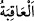

nasıl olduğuna bakın!
“De ki:” sizden önceki ümmetlerin başlarına gelenleri görmek için “yeryüzünde
dolaşın” seyahat edin “de sonra yalanlayanların sonu nasıl olmuş görüp düşünün.”
Onların nasıl yok edildiklerini düşünün.
“ sonra” lafzı, âyetteki “dolaşın” ve “görüp düşünün” diye vârid olan iki görevin
farklı olduğunu ifade eder. Çünkü dolaşıp seyahat etmenin emredilmesi, bakıp görmeye
ve düşünüp ibret almaya vesile olduğu içindir. Nitekim “Abdest al, sonra namaz kıl.”
sözü de böyledir. Burada abdest almak, namaz kılmanın şartı olduğu için emredilmiştir.
“
” işin sonu, vardığı yer demektir.
Bil ki, peygamberler ve Allah dostlarıyla alay etmek, âsî nefislerin her yer ve
zamanda süregelen kötü huylarındandır.
Rivayet olunur ki, bir gün Nebi (a.s.) Hz. Bilâl, Süheyb ve Ammar (r.anhum) gibi
ashabdan bazı güçsüz kimselerle Mescid-i Haram’da oturmuş sohbet ediyorlardı. Bu
esnada oraya yanında Kureyş’den bazı insanlarla Ebû Cehil çıkageldi ve “Muhammed,
bunların cennetin sultanları olduğunu iddiâ ediyor.” diyerek o fakir müslümanlarla alay
etti. Ancak Allah ona, Bedir Günü yapacağını yaptı. Müslümanlarla alay etmenin
cezasını gördü. Bu akıl sahipleri için ibretli bir hadisedir.
Mesnevî’de şöyle denilmiştir:
Ne dilini tuttun, kimseyi incitmemek için
Ne ibretle önüne ardına baktın
Önünde ne var? Ölümü anıp can çekişmenden başka
Ardında ne var? Dostların ölümünden başka
Hikâye olunur ki, İbn Heylan denilen bir kişi vardı. Sahabe-i kiram hakkında gereksiz
laflar ederdi. Bir gün bir duvarı yıkarken üzerine göçtü ve öldü. Onu Medîne’deki
“Cennetü’l-Bakî’” kabristanına defnettiler. Ancak ertesi gün kabrine bakıldığında,
cesedin defnedildiği yerde olmadığı görüldü. Sanki kabri boşaltılmış gibi üzerine atılan
toprak eşelenmişti.
Kabir taşlarını, cenâzesinde toplanan büyük kalabalığın gördüğü gibi, olduğu halde
buldular. Hatta görenler arasında Kadı Cemaleddin de vardı. Halk ise bölük bölük bu
ibretamiz olayı görmeye geliyorlardı. Bu hâdise, Allah’ın göğüslere genişlik vermeye
vesile kıldığı âyetlerden sayılıyordu. Allah’dan din selameti vermesini dileriz.” İmam
Sehâvî’nin el-Mekâsıdü’l-hasene’sinden alınmıştır.
Buradan iftira ve alayın neticesinin ne olduğu anlaşılmaktadır. Allah Teâlâ fâsıkların
cesedlerini mübarek mekanlarda bırakmaz, kötü ve çirkin yerlere nakleder. Nitekim
hadiste şöyle vârid olmuştur: “Ümmetimden Lût kavminin yaptığı kötülük üzere
ölenleri Allah, onların bulundukları yere nakleder ve onlarla beraber haşreder.”[90]